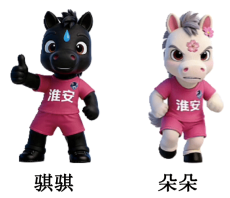

课程 · 课程目录
中阶现代文训练营 · 第2周
请用纸笔或电子笔记作答，在笔记中标明训练日、任务编号和原文段号。完成后可逐题展开参考答案与解析。
W2D1 · 信息类文本精读 · 《科技与艺术》
区分技术事实、应用效果与价值判断，整合三则材料。
任务 / 用时 |
操作与书写位置 |
完成标准 |
|---|---|---|
任务一 通读定向 8分钟 | 通读全文，按T1.1、T1.2完成记录，写在文后【任务一作答区】。 | 按指定对象梳理；关键判断能回指段落。 |
任务二 精读批注 7分钟 | 按B1—B3圈画正文并记同号；解释写在文后【任务二批注记录区】。 | 完成3条。短引文＋解释＋联系；区分直接证据与推断。 |
任务三 分类整合 10分钟 | 完成精读练习1、2，建立“技术—改变—体验”的信息链。 | 事实与评价分列，信息有材料和段号。 |
任务四 观点检验 5分钟 | 完成练习3，说明材料三如何限制“技术决定一切”的判断。 | 引用人的主体性相关表述，准确解释。 |
【文本精读】
01 材料一：技术应用与观赛体验
〔1〕本报讯 4 月 18 日，淮安主场迎战扬州队的“苏超”比赛在淮安市体育中心拉开帷幕。本场比赛中全息纱幕投影技术的使用，将科技与体育完美结合，为观众带来了全新的观赛体验。
〔2〕全息纱幕采用超薄高透光隐形网幕材质，白天几乎透明，不影响整体赛场观感；而在夜晚，结合高清激光投影设备，3D 虚拟影像得以清晰呈现，营造出虚拟与现实的无缝叠加效果。球员出场时，灯光熄灭，纱幕缓缓降下，光影特效同步启动，球员的名字和号码以全息文字形式悬浮空中，随后球员的虚拟影像逐渐浮现，带来了强烈的视觉冲击力。
〔3〕全息纱幕技术以往主要应用于高科技展示和艺术表演，此次在“苏超”赛场的应用，打破了传统的球员出场介绍形式，是体育赛事呈现形式的一次大胆创新，彰显了淮安推动足球文化与现代科技融合的理念。
（选自 2026 年 4 月 18 日《扬子晚报》，有删改）
随文导读
分析性阅读
分清技术属性、呈现方式和观众感受；“白天”“夜晚”划分两个情境。
随文注释
全息纱幕：文中指以高透光网幕配合投影形成虚实叠加效果的展示载体。
阅读提示
圈“几乎”，说明它为什么不能省略。
02 材料二：传统技艺与互动需求
〔1〕第二十二届中国国际文博会在深圳举办，创新性地让“文物活起来”是本届文博会的亮点之一。在文化传承与创新馆，三米多高的“山海龙马”主题花灯引人注目。红黄相间的飞龙彩灯栩栩如生，龙头不仅会动，还能吐出雾气；内置的 AI 芯片，能让它与观众对话聊天。
〔2〕北派李氏花灯传承人李林田告诉记者：“现在，我们把传统技艺与 AI、3D 打印等新技术融合，让古韵焕新生。非遗技艺的长久传承，在于通过创新融入现代生活。人们不仅希望花灯美观，最好还能适合打卡拍照，能和它进行互动。所以我们让花灯动起来、好玩起来，形成一个沉浸式的数字文旅复合体，满足更多人的文旅需求。”
（选自 2026 年 5 月 26 日《人民日报·海外版》，有删改）
随文导读
结构观察
先呈现场景与功能，再引用传承人的话说明创新与需求的关系。
阅读评点
“不仅”“还能”提示功能扩展；不要把吸引力缩减为外观。
阅读提示
连出“技术手段—互动形式—观众需求”。
03 材料三：相互启迪与人的主体性
〔1〕随着人工智能浪潮席卷全球，艺术与科技的深度融合不断拓展创作边界，成为推动艺术创新的重要力量。
〔2〕当古老的敦煌壁画借助数字技术焕发新的活力，虚拟展演、数字文博成为文化新业态；当千百年来人类对月亮的浪漫想象，借助科技力量正变为可知的现实……每一次科技的飞跃，都在拓展艺术表达的边界；每一次艺术的想象，也激发着人类探索未知的雄心。科学与艺术从来不是两条平行线，而是相互启迪、彼此成就的共生关系。
〔3〕然而人工智能的“智”要掌握在人的手中。人工智能时代的核心挑战不是科技，而是人的自我定位。在与人工智能共处、协作甚至被影响的环境中，我们需要保持和强化自身的主体性，在艺术创作中不被人工智能的指令或算法推荐所支配，而是充分发挥思想的判断力和思考的独立性，尤其是发挥艺术的想象力和原创力，使人工智能作品拥有文化的质量。
（选自 2026 年 5 月 15 日《人民日报·海外版》，有删改）
随文导读
分析性阅读
第2段讨论艺科关系，第3段用“然而”转入人在创作中的主体地位。
随文注释
主体性：这里强调人的独立判断、主动创造及对技术的掌握。
阅读提示
区分“技术拓展边界”与“技术决定一切”两种判断。
【任务一作答区】通读定向
T1.1 区分对象 依次写出三则材料各自的主要对象与讨论重点。
T1.2 辨认材料功能 材料一、二的具体事例与材料三的判断有何关系？用一句话说明。
【任务二批注记录区】逐项完成
正文圈画并写同号标记；下方摘录关键词句，再写解释及其联系。每处引文≤15字。
B1 ！ 程度限定 材料一第2段。圈出限制透明程度的词，说明删去它会改变什么判断。
B2 → 递进关系 材料二第1—2段。选择一组“不仅”所连接的内容，写清增加了哪一层功能或需求。
B3 ○ 判断与转折 材料三第2—3段。连接“相互”与“然而”，说明两个判断如何相容。
通读与批注参考
【任务一参考】通读定向
T1.1 区分对象
参考记录：材料一：全息纱幕改变赛场展示与观赛体验；材料二：花灯融合新技术满足互动需求；材料三：科技与艺术互相启迪，创作仍须保持人的主体性。
分析路径：分别依据新闻导语、传承人说明与评论的转折结论；共同话题不能替代每则材料的侧重点。
T1.2 辨认材料功能
参考记录：前两则提供技术进入体育展示与传统艺术的实例，第三则从融合现象提出双向启迪及人的主体性要求。
分析路径：材料三包含规范性主张，不能把前两则技术成功的事例当作“技术决定一切”的充分证明。
【任务二参考】批注示例与分析
B1 ！ 程度限定 材料一第2段
示例批注：“几乎透明”。“几乎”表示接近透明，仍保留程度差异；删去后就变成完全透明的绝对判断。
分析路径：比较改写前后的强度，并回到网幕与赛场观感的具体语境，不用空泛的“语言准确”。
示例批注：“不仅会动，还能吐出雾气”。花灯不只有外形或单一动作，还增加动态、雾气及互动体验，显示传统技艺适应现代需求。
分析路径：递进需写出被增加的具体内容。不能据此把创新解释为取消传统技艺。
示例批注：“相互启迪”；“然而”。科技与艺术双向促进；但融合不应削弱人的判断、想象和原创能力，技术仍须服务于人的创作。
分析路径：“然而”补充约束，没有否定前段的融合价值。承认技术作用与维护创作主体性可以同时成立。
精读练习
完成任务三、四；直接在各题下方作答。
1．信息分类 分别从材料一、二各提取一项技术手段及其带来的体验，按“手段—效果—依据”表述。
第1题参考答案与解析
参考答案：材料一第2段：高透光纱幕与投影配合，形成球员影像浮现、虚实叠加的观赛效果。材料二第1、2段：花灯内置AI芯片，可以与观众对话，满足互动需求。
解题分析
（1）先分清题目所需的三类信息：做法属于手段，观看或参与的变化属于效果，材料号和段号属于依据。
（2）用原文已写出的关系连接手段与效果，不能把两个都出现过、却无对应关系的名词任意拼接。技术名称不宜替代对具体功能的概括。
2．共同主题 用一句话概括三则材料的共同话题，再分别用一个短句写出各自的论述重点。
第2题参考答案与解析
参考答案：共同话题是科技与文化艺术的融合。材料一侧重技术如何改变赛事呈现；材料二侧重传统技艺如何通过创新满足文旅互动需求；材料三侧重科技与艺术相互启迪及人的主体地位。
解题分析
（1）各材料首尾句提供主要方向，具体事例帮助验证概括是否过宽或过窄。共同话题必须能覆盖三则材料。
（2）“共同话题”回答都在讨论什么，“论述重点”回答各自着重说什么。不要将三则材料都概括为“科技很重要”，否则会丢失它们的分工。
3．判断限定 “艺术创新完全取决于技术进步。”材料三能否支持这一说法？用一处关键表述说明。
第3题参考答案与解析
参考答案：不能支持。材料三第3段要求人保持独立判断、发挥想象力与原创力，表明作品质量还取决于人的创造；“完全取决于技术”排除了这些因素，超出了材料的观点。
解题分析
（1）先识别“完全”所表达的排他性：它把技术说成足以独自决定艺术创新的因素。
（2）再寻找能够限制这一判断的证据。材料三不仅肯定技术拓展边界，也明确提出人的主体作用；承认技术的重要性与否定技术单独决定一切可以同时成立。
W2D2 · 信息类文本题组 · 《科技与艺术》
依据文本限定作判断，把图像特征转化为具体、合理的应用表达。
环节 / 用时 |
精读任务 |
完成要求 |
|---|---|---|
任务一．审题定位 | 给四题分别标出“判断—概括—设计—评价”的要求。 | 第3题同时阅读图像与文字说明。 |
任务二．独立作答 | 完成题组1—4；概括第2题时兼顾白天与夜间。 | 设计须说明选谁、用什么技术、怎样互动。 |
任务三．证据补足 | 在第4题中明确科技作用与人的作用，并援引相应材料。 | 态度明确，理由覆盖两个层面。 |
任务四．核验表述 | 逐一核对范围词；核对设计效果能否由所写做法产生。 | 不把“几乎”改为“完全”，不空写效果。 |
题组训练
1．信息判断 下列对材料内容理解正确的一项是（ ）
A．全息纱幕白天完全透明，夜晚化身高清投影载体，呈现 3D 虚拟影像。
B．创新性地让“文物活起来”，是第二十二届中国国际文博会的看点之一。
C．“山海龙马”主题花灯引人注目，只是因为色彩绚丽，造型栩栩如生。
D．科学与艺术从来都是两条不相交的平行线，两者从不相互启迪、彼此成就。
第1题参考答案与解析
参考答案：B。其余三项分别扩大程度、缩减原因或颠倒关系。
解题分析
（1）A对照材料一第2段：“几乎透明”仍有程度限制，“完全透明”取消了这一限制，信息不一致。B对应材料二第1段，文博会亮点之一即创新性地让文物活起来。
（2）C对照材料二第1、2段：花灯除了外观，还可运动、吐雾、对话，并满足互动需求；“只是”排除了已有依据的其他因素。
（3）D对照材料三第2段，原文明确说科学与艺术相互启迪、彼此成就，选项将这一关系反向表述。
2．信息概括 阅读材料一，此次淮安“苏超”比赛中，全息纱幕投影技术的使用给观众带来了哪些新的体验？
第2题参考答案与解析
参考答案：白天纱幕几乎透明，不妨碍整体观赛；夜晚灯光、投影与纱幕配合，使全息姓名、号码及球员虚拟影像相继浮现，形成虚实叠加的效果，给观众带来新颖而强烈的视觉体验。
解题分析
（1）设问限定“材料一”和“观众体验”，信息主要集中于第2段。先按白天、夜晚两个情境筛选，避免只写夜间效果。
（2）技术属性需转化为观众能够感知的结果：高透光对应不妨碍观赛，投影与光影配合对应影像浮现、虚实叠加。
（3）第3段的“大胆创新”是对应用的评价，不能替代体验细节；作答也不必重复网幕材质等与体验无直接关系的全部参数。
3．图文应用 阅读材料二，利用科技手段为下面的“苏超”淮安队吉祥物进行创新升级，请你向小语介绍自己的具体做法和效果。（任选一个吉祥物，表达生动）“苏超”淮安队吉祥物“骐骐”“朵朵”以骏马为设计原型，谐音“奇迹多多”。骐骐是一匹黑色骏马，象征力量与速度。朵朵整体为雪白毛色，代表温情与传承。骐骐、朵朵一黑一白，一刚一柔，彰显了遇强则强、刚柔并济的竞技理念。

第3题参考答案与解析
参考答案：示例：小语，我想让“骐骐”成为会互动的赛场伙伴：装入AI语音模块，观众呼唤它时，它便应答问候；再通过感应装置触发扬蹄动作和奔跑光影，让黑色骏马的力量与速度看得见、听得到，使合影变成有趣的互动。
解题分析
（1）先读图文说明，选定“骐骐”的黑色骏马形象与力量、速度特征；若选“朵朵”，设计宜联系温情与传承，不能忽略对象特征。
（2）由材料二迁移的是“传统形象与技术结合以满足互动需求”的思路。须写出可理解的实现关系，如语音模块用于对话、感应装置用于触发动作。
（3）最后把做法与效果相连，并采用向小语介绍的语气。只列AI、3D等技术名称，或只说“更好玩”，都不足以构成具体方案。
4．观点评价 小文认为，人工智能时代，艺术创新最关键的是科技。你同意吗？阅读三则材料，简要说明你的观点和理由。
第4题参考答案与解析
参考答案：不同意将科技视为艺术创新的唯一决定因素。科技能够拓展艺术表达的方式与边界，但艺术想象也会启迪科技；作品的文化质量还需要人的独立判断、想象力与原创力。技术应服务于人的创造。
解题分析
（1）先把被评价的判断说清：题目比较的是艺术创新中各因素的地位，并非询问科技有没有作用。应承认材料一、二所写的技术贡献。
（2）材料三第2段说明科技与艺术相互启迪，不能化约为技术对艺术的单向决定；第3段进一步明确人的主体地位与创造要求。
（3）将“有重要作用”与“决定作品质量”区分开，才能从材料推出完整理由；不能因反对题设判断而转向否定科技。
W2D3 · 文学类文本精读 · 《如鲸向海，似鸟投林》
辨认人物双线与关键转折，理解行动如何改变人物的自我认识。
任务 / 用时 |
操作与书写位置 |
完成标准 |
|---|---|---|
任务一 通读定向 8分钟 | 通读全文，按T1.1、T1.2完成记录，写在文后【任务一作答区】。 | 按指定对象梳理；关键判断能回指段落。 |
任务二 精读批注 7分钟 | 按B1—B3圈画正文并记同号；解释写在文后【任务二批注记录区】。 | 完成3条。短引文＋解释＋联系；区分直接证据与推断。 |
任务三 关系分析 10分钟 | 完成精读练习1、2，追踪杨采采变化的原因及池塘的多重作用。 | 每个变化都有对应事件，避免只列形容词。 |
任务四 首尾联读 5分钟 | 完成练习3，比较开头的自我感受与结尾的青春理解。 | 用两处短引文解释变化。 |
【文本精读】
麦淇琳
01 从自我轻视到遇见他人
〔1〕14 岁的夏天，马路两边的熊猫堇正在爆花，开出来的花像熊猫的耳朵，憨态可掬。彼时的杨采采是个并不讨喜的姑娘，瘦仃仃的身材，枯黄的头发，细长的眉眼，透着诚惶诚恐的胆怯。她的父亲是海员，长年在海上航行，母亲整天忙于工作，在她看来，自己在父母的眼中，像一朵无足轻重的云，这让她很自卑。
〔2〕暑假，母亲打发杨采采到了乡下的外婆家。慵懒寂静的下午，杨采采在河边喝梨子水，那时候的杨采采以为，自己的人生就像这梨子糖水一样平淡无奇。她做的最无聊的事，就是长时间注视着蜗牛，看它在河边横跨一块大石头的旅行。
〔3〕日子枯燥无味，直到她遇见了一个放鹅的少年。
〔4〕已是七月，杨采采出神地望着四周如披炽焰的万物，一个放鹅的少年，就那样穿过时光，走进她的视野里。
〔5〕少年赶着一群鹅过来了。少年很瘦很高，皮肤黝黑。少年抓起一把海瓜子，扬起手，空中便多出一道灰绿色的抛物线。沙沙沙，每颗都落了地。那群鹅嘎嘎嘎涌过来，拍着翅膀，你争我抢着这种薄薄的绿色小贝壳。
〔6〕少年坐在河边，看着他的鹅群。鹅！少年突然一声喊，所有鹅都抬起头，屏息侧听，然后嘎嘎嘎地回应起来。
02 挖塘细节与初步交流
〔7〕这天杨采采很晚才到家，餐桌旁盛饭菜的外婆絮絮叨叨地说：“采采，你知道楼下那块荒地被挖了一个大坑吧？”外婆舀了一勺扁食汤到碗里。
〔8〕“有大坑吗？我没注意。”杨采采拿汤勺去够外婆碗里的扁食，外婆继续说：“那可不，那块地该是有鱼家的吧，已经挖了好一段日子了，不知道要干啥。”
〔9〕杨采采并没有把外婆的话放在心上，但是在那个周末的下午，她听到了不寻常的动静。少年正灰头土脸地在那个坑里挖土，他像一只勤快的土拨鼠，吃力地把挖出来的泥土一筐一筐运到一辆板车上。杨采采的出现让少年有些局促不安，他和杨采采对视了好几秒，才缓缓放下手中的铲子，然后轻轻地拍了拍身上的灰。
〔10〕“我叫陈有鱼。”
〔11〕“哦，我听外婆说过你的名字。”
〔12〕“嗯，你会不会觉得我很怪？他们都说我在做一件蠢事，说我疯了。”
〔13〕“不会，你的鹅都听你的，这多酷啊。”杨采采露出羡慕的神情。陈有鱼回头，以一种超然的眼光，盯着她说：“我养的鹅会飞，能飞很高很高。”
〔14〕“能飞多高呢？”杨采采惊讶地张大了嘴巴。陈有鱼就指了指天，蔚蓝的天空有半轮残月，像道浅浅的牙印。“能飞到那儿！”说完他嘿嘿地朝她笑。
随文导读
分析性阅读
外婆的叙说引出“大坑”，随后通过杨采采的亲见呈现少年的劳动。
随文注释
局促不安：拘束、不自然的样子。注意它与劳动中的执着并存。
阅读提示
比较村人的评价与杨采采眼见的行动，勿将两者混同。
03 父亲的愿望与少年的行动
〔15〕杨采采偶尔会听到关于陈有鱼爸爸的事情：说他爸爸是养鹅的，整个村子，他爸养鹅最厉害，但他爸在一次台风天出去后就没有再回来。邻居们说陈有鱼的爸爸死了，救了三个溺水的人，自己却没能活下来。
〔16〕那以后，陈有鱼就开始日复一日地挖土。村里的人都说他疯了，杨采采也不明白他为什么要这么做。陈有鱼爬到高高的土堆上，拿起水壶喝个精光，然后张开细长的双臂箍了一个圆，说：“我要挖一个池塘。”
〔17〕杨采采惊叫一声：“池塘？”
〔18〕陈有鱼点了点头，说：“我爸说了，你天性是什么样的，就做你欢喜自在的事情。要想成为一个最厉害的养鹅人，得先给它们建一个池塘。这是我爸的愿望，我要替他完成。”
〔19〕雨季提前来了，陈有鱼的池塘也完工了，大雨将池塘蓄满了雨水，附近的树叶都漂到池塘中心去了。在漫长的黄昏，陈有鱼把鹅都赶去池塘。鹅见到水，开始加快步伐。它们嘎嘎嘎叫着，伸长脖子，往池塘边探了探，然后扑打着翅膀，哗啦一声，跃入池塘中。
〔20〕陈有鱼不禁放声歌唱——“蓝天撇下了我，我点起一堆火。点起火，以便做火的朋友；点起火，好进入沉沉的黑夜；点起火，为了更好地生活……”
随文导读
结构观察
父亲的往事补充挖塘缘由；池塘完工与歌唱接续呈现行动结果。
阅读评点
第18段让陈有鱼亲口说明动机；人物语言是解释行动的重要依据。
阅读提示
标出“父亲的愿望—自己的选择—实际行动”的关系。
04 池塘景象与青春理解
〔21〕暑假即将结束，杨采采不想回城，但母亲严令她按时回去上课。杨采采决定离开前再去看看陈有鱼的池塘。远远地，她看见鹅群在金色的水面上嬉戏，村民们惬意地在池塘边闲聊……眼前的一切，安抚了她的焦灼和忧虑。
〔22〕开学季，杨采采去学校的图书馆找资料，偶然在书中翻到一张便笺纸，纸上写着一句话——青春最好的年华，如鲸向海，似鸟投林。
〔23〕那一瞬间，杨采采有些恍惚，她仿佛看见那一个个夏日的夜晚，星空之下，陈有鱼在池塘里一钉耙一钉耙抡得老高的模样。她忍不住勾起嘴角笑：青春最好的年华，是哪怕站在最黑暗的时空，还可以用自己温柔的方式，来对待这个世界，如鲸向海，似鸟投林。
随文导读
分析性阅读
杨采采先受到眼前景象的安抚，后在阅读便笺时重新理解陈有鱼。
阅读评点
结尾把具体故事提升为青春的理解；标题的含义应回到这一过程。
阅读提示
对照开头与结尾，各摘一个短语说明认识的改变。
【任务一作答区】通读定向
T1.1 杨采采的线索 按“起点—相遇—变化”概括杨采采的经历，并注明段号。
T1.2 陈有鱼的线索 写出少年行动的起因、关键行动及结果，注明两条线相交之处。
【任务二批注记录区】逐项完成
正文圈画并写同号标记；下方摘录关键词句，再写解释及其联系。每处引文≤15字。
B1 △ 劳动证据 第9段。摘动作或外貌细节，解释它支持怎样的判断。
B2 ！ 话语来源 第13、16—18段。区分村民评价与少年自述，说明解释行动应优先核对什么。
B3 → 认识转变 第20—23段。选择一处少年表达和一处杨采采的心理表述，说明它们的联系。
通读与批注参考
【任务一参考】通读定向
T1.1 杨采采的线索
参考记录：自卑、生活无趣（1—2）→遇见放鹅和挖塘的少年（3—14）→看到池塘景象而受安抚，并重新理解青春（21—23）。
分析路径：以她看到的事情与认识变化配对，不能把陈有鱼的全部经历直接当作她的经历。
T1.2 陈有鱼的线索
参考记录：父亲离世，留下养鹅与建池塘的愿望（15—18）→日复一日挖塘→池塘完工、鹅群入水（19—20）。两人因放鹅、挖塘相遇并交流（4—18）。
分析路径：父亲经历由后文补叙交代；故事发生顺序与读者获知顺序不同，但两条人物线必须有共同事件。
【任务二参考】批注示例与分析
B1 △ 劳动证据 第9段
示例批注：“灰头土脸”；“一筐一筐”。沾满尘土和反复搬运呈现劳动的艰苦、持续，支持少年勤劳投入的判断。
分析路径：先分析可见状态与动作，再推出人物特点；不能从“吃力”推成他动作轻松或天生强健。
示例批注：“村里的人都说他疯了”；“我要替他完成”。村民把挖塘视为反常，少年却说明自己要承接父亲愿望；自述与持续行动共同解释动机。
分析路径：“村里人说”只证明有人这样评价，不证明评价正确；用本人话语和实际行为相互核验。
示例批注：“为了更好地生活”；“温柔的方式”。少年在失去父亲后仍建设生活；杨采采从歌声、池塘与劳动中领会以行动面对困境的青春价值。
分析路径：联系她的见闻与后来的理解才能说明影响；不能说一次观看消除了她所有烦恼。
精读练习
完成任务三、四；直接在各题下方作答。
1．双线梳理 用3组“事件—感受”概括杨采采的变化；每组注明段号，并说明与陈有鱼的哪一行动有关。
第1题参考答案与解析
参考答案：示例：第2、3段，独处乡下、尚未遇见陈有鱼，杨采采感到寂寞无聊；第13、14段，看到少年与鹅群的亲密互动、听他说鹅能高飞，她羡慕而惊讶；第21段，看到少年建成的池塘中鹅群嬉戏、村民闲聊，她的焦灼和忧虑得到安抚。
解题分析
（1）按“事件—感受”配对，先用文本明确的心理词作锚点，再补足引发感受的事件与段号。
（2）第一组是相遇前的基线，后两组才是陈有鱼行动带来的变化；不必强行把全部心理都解释成由少年直接造成。也可选择第23段，但仍须保持事件与感受相对应。
2．细节推论 第9段哪些词句能够说明陈有鱼挖塘的状态？摘出两处，并分别写出可支持的判断。
第2题参考答案与解析
参考答案：“灰头土脸”说明挖塘使他满身尘土，可见劳动辛苦；“吃力地……一筐一筐运”说明劳动费力且持续，可支持他肯付出、做事执着的判断。
解题分析
（1）先摘出能表现状态或动作的词语，再说明这些词本身表达了什么，最后联系挖塘情境推出人物特点。
（2）从“吃力”可以推知费力，不能直接推知他体弱；从持续运土可推知付出，若要说明长期坚持，还可联系第16段“日复一日”。判断强度应与证据相称。
3．首尾照应 比较第1段“无足轻重的云”与第23段“温柔的方式”，说明杨采采对自身和生活的认识有何变化。
W2D4 · 文学类文本题组 · 《如鲸向海，似鸟投林》
围绕人物行动分析描写、歌词与标题，并开展同题比较。
环节 / 用时 |
精读任务 |
完成要求 |
|---|---|---|
任务一．审题定位 | 将各题对应到心理线、歌词、挖土句、标题和人物比较。 | 比较题同时回看《孤独之旅》。 |
任务二．独立作答 | 完成题组1—5；第3题从外貌、动作和比喻的具体表达入手。 | 不把描写名称直接当作分析结论。 |
任务三．比较论证 | 完善第5题：先归纳相似经历，再说明偏爱谁及其文本依据。 | 两个人物均有证据，选择理由具体。 |
任务四．核验表述 | 核对心理变化的先后次序，检查标题解释是否结合结尾。 | 不把人物遭遇和人物品质混为一谈。 |
题组训练
1．心理梳理 请按照故事情节发展的脉络，梳理杨采采的心理变化过程。
胆怯自卑 → （1）________________ → 漠不关心 → （2）________________ → 焦灼和忧虑被安抚 → （3）________________ → （4）________________
第1题参考答案与解析
参考答案：依次可填：（1）寂寞无聊；（2）羡慕、惊讶；（3）恍惚；（4）释然、受到鼓舞。末项也可用能够说明结尾积极变化的近义表述。
解题分析
（1）沿情节顺序定位：第2、3段写乡居生活的枯燥，第13、14段写对陈有鱼的羡慕与惊讶，第23段先写恍惚，再写微笑及新的青春理解。
（2）已给出的“漠不关心”“焦灼和忧虑被安抚”是定位锚点。填空必须放在这些节点之间，不能将“遇见少年”“池塘建成”等事件误填成心理。
（3）末项需要从“笑”和对青春的重新理解中概括，因此比直接摘录更具解释性。写“释然、获得力量”有据，写“再无烦恼”则超出文本。
2．语段作用 第20段的歌词内容可不可以删去？为什么？
第2题参考答案与解析
参考答案：不宜删去。歌词中的“点起火”“为了更好地生活”与陈有鱼失去父亲后仍坚持挖塘、完成愿望的经历相照应，表现他主动面对困境的态度；反复的句式增强情感力量，并为杨采采在结尾理解青春作铺垫。
解题分析
（1）先解释歌词内容，再联系第15—19段：失去父亲是处境，持续挖塘是行动。歌词把这些行动所体现的生活态度集中表达出来。
（2）“点起火”反复出现，形成递进的情感力度。此处应结合困境中的主动行动理解其意味，不能只说用了反复、增强语气。
（3）用删去后的损失检验作用：情节仍可衔接，但人物心声和结尾主题的准备会减弱。因此“不宜删”应由内容与结构两方面论证。
3．描写赏析 从描写的角度赏析第9段画横线的句子。
第3题参考答案与解析
参考答案：“灰头土脸”写出劳动中的外貌状态；“挖”“运”和“一筐一筐”写出具体、持续而吃力的动作；比作“勤快的土拨鼠”，使挖土的样子鲜明可感，表现陈有鱼的勤劳与执着。
解题分析
（1）依题干“从描写的角度”先辨认描写对象：外貌状态和劳动动作是主要分析入口。“土拨鼠”是比喻，可用于进一步说明动作如何被形象化。
（2）由“吃力”“一筐一筐”可知劳动艰辛而持续，联系第16、18段的日复一日及完成父亲愿望，可据此概括执着。
（3）“勤劳、执着”是从细节得出的判断。只列外貌描写、动作描写、比喻三个名称，或只答“写得生动”，都没有完成赏析。
4．标题理解 说说你对小说标题“如鲸向海，似鸟投林”的理解。
第4题参考答案与解析
参考答案：鲸向大海、鸟归山林，字面上指向适合自身生存的天地；联系故事，标题还指找到自己的方向与精神归属。陈有鱼坚持挖塘，杨采采从他身上获得理解与力量，共同说明人在困境中仍可用自己的方式温柔而坚定地面对生活。
解题分析
（1）先解释比喻性形象的共同关系：鲸与海、鸟与林，都是生命与适宜天地的关系，不能只将标题拆成两个景象。
（2）再联系第18段“做你欢喜自在的事情”与第23段的青春感悟，确定“方向、归属、对待世界的方式”等深层含义。
（3）最后用人物经历限定解释。标题不是泛泛要求逃离现实，而是在具体困难中寻找并坚持有意义的行动。
5．人物比较 陈有鱼和杜小康（《孤独之旅》）这两人在成长之路上相似的经历是什么？你更喜欢哪个人物？请说明理由。
第5题参考答案与解析
参考答案：两人都遭遇家庭变故，并在困难中通过行动成长。示例：我更喜欢陈有鱼；父亲离世后，他仍日复一日挖塘，完成父亲愿望，为鹅群与村民带来益处，表现出执着与积极面对生活的力量。若选择杜小康，也可据其受伤追鸭、主动分担说明理由。
解题分析
（1）先完成共同经历这一问：杜小康因家境骤变失学放鸭，陈有鱼因父亲去世承接养鹅和挖塘愿望。两者相似在遭遇变故、经受考验，具体遭遇并不相同。
（2）再完成偏爱及理由这一问。选择哪一人物没有唯一规定，但必须从其行动推出所欣赏的品质。
（3）比较要兼顾两人，共同点不能只写“都很坚强”；偏爱也不意味着否定另一人。可使用“经历—行动—品质”的顺序组织。
W2D5 · 综合练习 · 材料辨析与人物分析
在不同文体中区分事实、推断与评价，建立充分的因果解释。
环节 / 用时 |
精读任务 |
完成要求 |
|---|---|---|
任务一．重读定位 | 重读科技材料一第2段、材料三第3段及小说第18—23段。 | 找出限定判断的词与引发变化的事件。 |
任务二．命题辨析 | 完成练习1，分别判断两条表述能否得到文本支持。 | 逐条写明依据与表述范围。 |
任务三．比较论证 | 完成练习2，说明池塘给鹅群、村民和杨采采带来的不同改变。 | 三个对象分别举证，区分物质变化与心理变化。 |
任务四．结论限定 | 完成练习3，为“陈有鱼的行动影响了杨采采”补足中间的解释。 | 写清她看见什么、怎样理解、如何变化。 |
综合练习
1．命题辨析 分别判断并说明理由：（1）全息纱幕白天完全透明。（2）挖塘成功直接消除了杨采采的一切烦恼。每条引用或概述一处依据。
第1题参考答案与解析
参考答案：（1）不能支持。材料一第2段写“几乎透明”，不是“完全透明”。（2）不能支持。小说第21段只写眼前池塘景象安抚了她当时的焦灼和忧虑，未说明所有烦恼永久消失。
解题分析
（1）两条表述都需核对限定词：第一条改变程度，第二条把特定情境中的心理变化扩大为全范围、持续性的结果。
（2）反驳应指明具体改变，不应因句子出现“完全”“一切”就机械判错；关键是这些强判断是否有足够文本依据。
2．多角度分析 池塘给鹅群、村民、杨采采分别带来了什么改变？按“对象—变化—证据—解释”分三点作答，写120—160字。
第2题参考答案与解析
参考答案：对鹅群，池塘提供了活动的水域，第19段写它们跃入水中，说明挖塘改善了它们的生活空间。对村民，第21段写人们在池塘边惬意闲聊，池塘成为休憩交流的地方。对杨采采，眼前景象安抚了她的焦虑，后来她又由少年的劳动理解青春，说明池塘及其建成过程给她带来了精神启发，而不只是观赏的愉快。
解题分析
（1）采用同一比较结构，三点分别写对象、变化、证据和解释，确保没有把村民的感受移到鹅群或杨采采身上。
（2）前两点主要是生活场所与活动的变化，第三点还包含人物理解的变化。后者要结合第23段，不能只凭“池塘建成”就直接断言人物成熟。
（3）把第21段的当时安抚与第23段的后续领悟相联，可说明影响如何发展，但不能把这种积极影响扩大成一切问题已解决。
3．补足推论 用三句话写出“陈有鱼的行动影响杨采采”的过程：她看见什么；怎样理解；形成怎样的新认识。
第3题参考答案与解析
参考答案：她看见陈有鱼日复一日挖塘，终于使鹅群有了池塘，也让村民在塘边休憩。她由这些行动理解到，遭遇不幸仍可以坚持愿望、给周围带来美好。回校后，她将这一理解化为对青春的认识，感到人仍能用温柔而坚定的方式面对世界。
解题分析
（1）题目要求三句话分别承担观察、理解、变化三个环节。第一句应写文本事件，第二句解释事件的意义，第三句再写人物认识的转变。
（2）这样补足“影响”中间的心理理解过程，能够避免“挖塘成功，所以一切烦恼消失”这一跳跃推论。